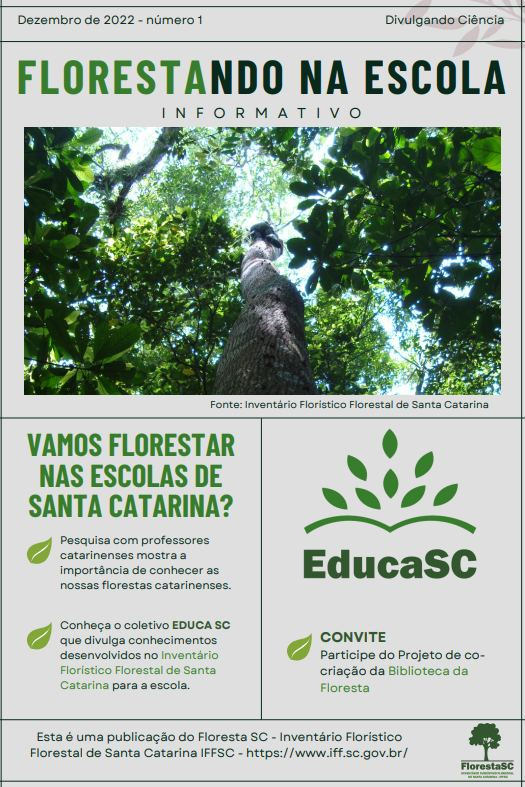

Traducido del original en portugués. Los títulos de publicaciones, las citas y los nombres se mantienen en su idioma original.
Educación forestal
Institución responsable:
Universidad Regional de Blumenau (FURB)
Coordinadoras:
Profa. Dra. Daniela Tomio
Profa. Dra. Simone Leal Schwertl
Objetivo:
Promover acciones de divulgación científica y de educación ambiental, especialmente para el público escolar
Las acciones de Educación Forestal del FlorestaSC promueven actividades de divulgación científica, dirigidas especialmente al público escolar, a partir del conocimiento científico generado en los estudios del FlorestaSC.
El equipo desarrolla materiales educativos y recorridos formativos con docentes y estudiantes para despertar la curiosidad, sensibilizar sobre el conocimiento socioambiental y movilizar acciones sostenibles sobre y en nuestros bosques catarinenses, a través de la escuela y la universidad.
Una de las propuestas es la Biblioteca del Bosque, un conjunto de folletos sobre los bosques catarinenses elaborados en coautoría con docentes de la Red Estatal de Santa Catarina.
Conozca nuestras iniciativas de Educación Forestal


Acceda AQUÍ a nuestras publicaciones y boletines
FIQUE POR DENTRO
Biblioteca del Bosque
La Colección Biblioteca del Bosque Catarinense es un material educativo elaborado en coautoría con docentes de la Red Estatal de Santa Catarina, que aborda temas de los bosques catarinenses articulados con el Currículo Base del Territorio Catarinense.
El material está compuesto por cinco (5) folletos que buscan promover recorridos formativos con docentes y estudiantes para despertar la curiosidad, sensibilizar sobre el conocimiento socioambiental y movilizar acciones sostenibles sobre y en nuestros bosques catarinenses, a través de la escuela y la universidad.
Cada folleto aborda un tema sobre los bosques catarinenses. Conozca los cinco temas en la imagen:
ACESSE E FAÇA O DOWNLOAD DA COLEÇÃO DA BIBLIOTECA DA FLORESTA CATARINENSE

En abril de 2023 comenzamos los encuentros de nuestro colectivo para planificar y desarrollar colaborativamente los folletos de la Biblioteca del Bosque Catarinense. Los encuentros son mensuales y se realizan de forma presencial y en línea a la vez. Además del equipo de docentes e investigadores del FlorestaSC, participan docentes de Educación Básica de Blumenau y la región.

Presentación de la propuesta de elaboración de la Biblioteca y explicación sobre el FlorestaSC.

Tiempo de estudio sobre «comunicación pública de la ciencia» y reunión de los grupos para discutir el contenido producido por el FlorestaSC sobre cada tema de los folletos.

Intercambio de diferentes formas de comunicación pública de la ciencia y definición de directrices para la elaboración de los folletos.

Integrantes del colectivo divididos en grupos para trabajar en la elaboración de cada folleto.
Pronto, más información sobre la composición de la Biblioteca del Bosque.
Siga el avance de nuestras actividades en nuestros BOLETINES

Aplicaciones de realidad virtual
Se desarrollaron aplicaciones de realidad virtual para difundir conocimientos sobre los bosques catarinenses, especialmente en el contexto escolar.
Entre 2024 y 2026, en una alianza entre el FlorestaSC y el LDDT – Laboratorio de Desarrollo y Transferencia de Tecnología de la FURB, se ejecutó el subproyecto «FlorestaSC: divulgación científica sobre bosques mediante tecnologías digitales basadas en realidad virtual, aumentada y alternativa». Fue coordinado por el Prof. Dr. Maurício Capobianco Lopes y financiado por la FAPESC.
Con el fin de difundir de forma interactiva conocimientos sobre los bosques catarinenses en el ámbito escolar, se desarrollaron tres (3) aplicaciones de realidad virtual:
- FlorestaSC RA: una aplicación de realidad aumentada que permite interactuar con folletos explicativos sobre el bosque [Más información; Descarga]
- FlorestaSC RVi: una aplicación de realidad inmersiva en el parque Floresta Rene Frey (Fraiburgo/SC) [Más información; Descarga]
- FlorestaSC na Trilha: una aplicación de realidad alternativa para usar durante la visita al Parque São Francisco de Assis (Blumenau/SC), que permite profundizar los conocimientos sobre el parque. [Más información; Descarga]
Mire el video y conozca las aplicaciones:
FlorestaSC RA: aplicación de realidad aumentada
FlorestaSC RA es una aplicación de preguntas y respuestas que usa realidad aumentada. Hace que el aprendizaje sobre los bosques y las especies catarinenses sea más dinámico y divertido.
Con FlorestaSC RA usted puede interactuar con cinco (5) especies de árboles de nuestros bosques y conocer más sobre sus características: imbuia, xaxim-bugio, araucaria, palmiteiro y embaúba.
Descargue la aplicación FlorestaSC RA en Google Play:


Imprima las fotos de las especies (marcadores) o apunte la cámara de su celular hacia ellas para usarlas con la aplicación.


FlorestaSC RVi: aplicación de realidad inmersiva
FlorestaSC RVi ofrece una experiencia inédita de realidad virtual (RV) en el Bosque René Frey. La aplicación abre las puertas de uno de los santuarios ecológicos más importantes de Fraiburgo, combinando turismo, historia y rigor científico.
Olvídese del mundo exterior y transpórtese a uno de los raros bosques nativos en área urbana de Brasil. Aquí la conservación no es solo un concepto: es una experiencia viva.


Descargue la aplicación FlorestaSC RVi en Google Play:
FlorestaSC na Trilha: aplicación de realidad alternativa
FlorestaSC na Trilha es una aplicación educativa que integra naturaleza y tecnología para fortalecer la educación forestal y la divulgación científica en contextos no formales. Desarrollada para el Parque Natural Municipal São Francisco de Assis, en Blumenau (SC), usa recursos de realidad alternativa para mediar la experiencia en los senderos y promover aprendizajes en tres dimensiones: conocer en, sobre y para el bosque.
El conocer en el bosque valora la inmersión, la observación atenta y la investigación en contacto directo con el ambiente.
Descargue la aplicación FlorestaSC na Trilha en Google Play:


Exposición itinerante
Nuestros Bosques: exposición itinerante
Estamos realizando una exposición que recorre escuelas, universidades, centros comerciales y eventos en todo el estado, y que presenta de forma resumida el FlorestaSC – Inventario Florístico Forestal de Santa Catarina – y sus logros.
¡Cualquier propietario o administrador de un espacio con circulación de personas puede recibir la exposición «Nuestros Bosques», siempre de forma gratuita!
Información y reservas por correo electrónico a florestasc@furb.br o por teléfono al +55 (47) 3221-6100
En todos estos años de investigación, el FlorestaSC se dirigió al público científico, publicando libros, artículos, etc. Ahora también miramos al público en general, personas interesadas en conocer lo que se ha descubierto hasta ahora sobre los bosques catarinenses. Para ello, ideamos una exposición con todos los descubrimientos.
La idea es presentar de una forma más sencilla lo encontrado hasta ahora e informar al público sobre temas y terminologías relacionados con la naturaleza.
Detalles del material:
Cuenta con 3 mesas expositivas con materiales usados en campo, libros publicados, semillas, madera y plantas, además de 13 paneles informativos y otros con fotos del acervo del FlorestaSC;
Espacio necesario: al menos 60 m², cubierto y protegido del viento fuerte.


Los temas abordados son:
Descubra cómo se hace un inventario forestal
Antes incluso de que el FlorestaSC/IFFSC entrara en la historia, dos grandes investigadores ya habían estudiado los bosques y las plantas de Santa Catarina entre 1950 y 1970. El FlorestaSC/IFFSC comenzó en 2007 con los levantamientos de la flora. Aquí presentamos cómo se hizo.
Cuánto bosque nos queda y otros descubrimientos
El inventario forestal incluye el levantamiento cuantitativo y cualitativo. Aquí mostramos cuánto bosque nos queda en el estado y en qué condiciones se encuentra (principales especies y principales preocupaciones).
Tipos de bosques en Santa Catarina
El estado de Santa Catarina está dentro del bioma Mata Atlántica, en el que se encuentran diferentes tipos de bosques (fitofisonomías). Sus diferencias se deben a variaciones del clima, los suelos, el relieve y la ubicación geográfica, que se explican aquí.
Tipos de plantas
Los bosques tropicales y subtropicales, como el nuestro, son los que presentan los tipos de plantas más variados. En cinco años de levantamiento de los bosques por el FlorestaSC se encontró una riqueza elevada de especies. Aquí presentamos las características de cada grupo de plantas y el número de especies encontradas en cada uno.
Epífitas
Las epífitas son plantas típicas de los bosques tropicales y subtropicales que usan los árboles como soporte (sin perjudicarlos). Mucha gente es apasionada por este grupo de plantas, que tiene una belleza propia y una forma muy diferente de sobrevivir.
Pteridófitas
Las pteridófitas, también llamadas colas de caballo, helechos arborescentes, culantrillos o helechos, son plantas muy conocidas, pues muchas se usan para decorar balcones y jardines. Muchas no tienen la forma característica de los helechos de casa, y es en el bosque donde encontramos una gran variedad de tipos. Aquí mostramos un poco más sobre el tema.
Herbario: una gran colección de plantas
El paraíso de los botánicos es el herbario, donde se guardan muestras de las plantas recolectadas en campo. El herbario tiene sus propias reglas; mostramos cómo funciona el Herbario FURB, donde están almacenadas todas las plantas recolectadas por el FlorestaSC.
Sucesión forestal
¿Sabía que los bosques degradados pueden recuperarse? Pero no es un proceso rápido: puede llevar siglos. Por eso es importante conservar los bosques. Aquí mostramos cómo funciona este proceso de sucesión.
La alianza entre plantas y animales
La alianza entre plantas y animales es, muchas veces, tan específica que la falta de uno puede llevar a la extinción del otro. Las plantas ofrecen refugio y alimento a los animales, y los animales participan en la reproducción, la dispersión de las semillas y la protección de las plantas; una alianza de muchos millones de años de evolución.
Diversidad genética
La genética está presente en todo ser vivo y es la base de la evolución de cualquier especie a lo largo del tiempo. Con las plantas no es diferente: la pérdida de diversidad genética perjudica el futuro de las especies. Conozca lo que el FlorestaSC constató sobre la genética de las especies amenazadas de extinción en Santa Catarina.
Usando los recursos del bosque
Un grupo de la EPAGRI, Empresa de Investigación Agropecuaria y Extensión Rural de Santa Catarina, en alianza con el FlorestaSC/IFFSC, visitó las casas de agricultores en todo el estado para averiguar qué especies eran más usadas para madera, medicina, alimentación y ornamentación. Aquí se presentan las especies más citadas por los agricultores, quizás con potencial de uso futuro.
Impactos en el bosque
Era de imaginar que existen muchas actividades que impactan los bosques catarinenses; pero ¿sabe cuáles son las más comunes? El FlorestaSC/IFFSC hizo ese levantamiento y aquí está resumido.
¿Qué hacer?
Aunque hemos perdido una parte significativa de nuestros bosques, todavía tenemos una gran riqueza natural; solo hay que saber cómo cuidarla. Aquí hay sugerencias de acciones que podrían realizar el Estado y cada uno de nosotros. Reflexione sobre el tema.
Instituciones y eventos donde expusimos
Epagri / Florianópolis
Centro Administrativo del Gobierno del Estado / Florianópolis
Shopping Continente / Florianópolis
Instituto Federal de Santa Catarina - IFSC / Garopaba
Universidade Barriga Verde - Unibave / Orleans
Siderópolis Clube (Municipalidad de Siderópolis) / Siderópolis
Museos de Zoología de la Universidad del Extremo Sur Catarinense – UNESC / Criciúma
Shopping Norte / Blumenau
Shopping Neumarkt / Blumenau
Dudalina Camisaria / Blumenau
Dudalina Camisaria / Benedito Novo
Dudalina Camisaria / Presidente Getúlio
Dudalina Camisaria / Luís Alves
Dudalina Camisaria / Terra Boa - PR
Mausoleo Dr. Blumenau / Blumenau
AGROTEC / Itajaí
Feria de las Orquídeas / Blumenau
Universidade Estácio de Sá / São José
Instituto Federal de Santa Catarina - IFSC - Gaspar
Museo del Instituto Federal Catarinense / Santa Rosa do Sul
Universidade Comunitária da Região de Chapecó - Unochapecó / Chapecó
EEB Bom Pastor / Chapecó
Universidade do Oeste de Santa Catarina / Unoesc campus Xanxerê
Universidade Federal da Fronteira Sul / Campus Chapecó
Shopping Pátio Chapecó / Chapecó
EEB Professora Lourdes Ângela Sarturi Lago / Chapecó
Universidade do Oeste de Santa Catarina / Unoesc campus Chapecó
Colégio Exponencial / Chapecó
EEB Cardeal Arcoverde / São Carlos
Universidade do Estado de Santa Catarina - UDESC / Lages
Secretaría de Desarrollo Regional / São Joaquim
Universidade Federal de Santa Catarina - UFSC Curitibanos / Curitibanos
Universidade Federal de Santa Maria - UFSM / Frederico Westphalen - RS
Universidade Federal de Santa Maria - UFSM / Santa Maria - RS
Biblioteca del Bosque Catarinense
Consulte aquí:
BIBLIOTECA DA FLORESTA CATARINENSE
A Biblioteca da Floresta Catarinense é um material educativo composto por cinco (5) livretos que abordam diferentes temáticas sobre as florestas catarinenses. Este material visa promover percursos formativos com professores e estudantes a fim de despertar a curiosidade, sensibilizar ao conhecimento socioambiental e mobilizar às ações sustentáveis sobre e nas nossas florestas catarinenses, via escola e universidade.

➤ Regístrese para descargar la colección Biblioteca del Bosque Catarinense.
La colección Biblioteca del Bosque Catarinense está compuesta por los siguientes folletos:
- Volumen 1: Cobertura forestal
- Volumen 2: Riquezas del bosque
- Volumen 3: Usos de productos y servicios del bosque
- Volumen 4: Impactos antrópicos en el bosque
- Volumen 5: Reservas del bosque
Escuche el pódcast sobre la Biblioteca del Bosque Catarinense:
Esta parte de la página usa un recurso interactivo de Google Sites que no se pudo copiar. Ver en el sitio actual ↗
Boletines «Florestando na Escola»
Para que o público possa acompanhar as atividades realizadas e as etapas futuras do coletivo da Educação Florestal, o FlorestaSC está disponibilizando um informativo, semestralmente.
Boletín «Florestando na Escola»
número 1, dic. 2022
número 2, sep. 2023
número 3, mar/25
Cartillas y folletos
Cartilla: Lo que usted debe saber sobre los bosques de Santa Catarina
Folleto: Biblioteca del Bosque Catarinense

Folleto: Árboles de Santa Catarina en realidad virtual aumentada

Trabajos presentados en eventos de enseñanza de las ciencias
Os trabalhos do coletivo de educação florestal são divulgados em eventos científicos, através da submissão de resumos e apresentações orais. Consulte abaixo os resumos dos trabalhos apresentados.
TISE 2025 - Conferência Internacional sobre Informática na Educação - Recife/PE: 02 a 04 de dezembro de 2025
- REALIDADE VIRTUAL NA EDUCAÇÃO FLORESTAL: TRÊS APLICATIVOS EDUCACIONAIS PARA DIVULGAÇÃO CIENTÍFICA SOBRE AS FLORESTAS CATARINENSES RESUMO
CBIE 2025 - Congresso Brasileiro de Informática na Educação - Curitiba/PR: 24 a 28 de novembro de 2025
- ENTRE ÁRVORES E TELAS: UM APLICATIVO DE REALIDADE AUMENTADA PARA EDUCAÇÃO FLORESTAL RESUMO
VI SECEC - Simpósio Catarinense em Educação em Ciências (2025) - Florianópolis/SC: 06 a 08 de novembro de 2025
- DIVULGAÇÃO CIENTÍFICA PARA EDUCAÇÃO FLORESTAL COM TECNOLOGIAS DE REALIDADE VIRTUAL RESUMO
EREBio Sul 2025 - Encontro Regional Sul de Ensino de Biologia - Curitiba/PR: 12 a 14 de outubro de 2025
- EDUCAÇÃO FLORESTAL COM USO DE REALIDADE AUMENTADA: AVALIANDO UM APLICATIVO PARA ENSINAR E APRENDER SOBRE AS FLORESTAS DE SANTA CATARINA RESUMO
MIPE 2025 - Mostra Integrada de Ensino, Pesquisa, Extensão e Cultura - Blumenau/SC: 16 a 18 de setembro de 2025
- BIBLIOTECA DA FLORESTA CATARINENSE: DIVULGAÇÃO CIENTÍFICA EM INTERFACE À FORMAÇÃO DOCENTE RESUMO
- DESENVOLVIMENTO DE MATERIAL EM REALIDADE AUMENTADA PARA A DIVULGAÇÃO CIENTÍFICA DAS FLORESTAS RESUMO
IV SECIM - Seminário de Ensino das Ciências da Natureza e da Matemática (2025) - Blumenau/SC: 21 a 23 de agosto de 2025
- DIVULGAÇÃO CIENTÍFICA PARA EDUCAÇÃO FLORESTAL VIA “BIBLIOTECA DA FLORESTA CATARINENSE”: REFLEXÕES SOBRE SUA ARQUITETURA TEXTUAL RESUMO
- REALIDADE AUMENTADA NO ENSINO DE CIÊNCIAS: O CASO DO APLICATIVO “FLORESTASC RA” PARA EDUCAÇÃO FLORESTAL RESUMO
V SECEC - Simpósio Catarinense em Educação em Ciências (2024) - Araquari/SC: 14 a 16 de novembro de 2024
- BIBLIOTECA DA FLORESTA CATARINENSE: DIVULGANDO CIÊNCIA NA ESCOLA PARA EDUCAÇÃO FLORESTAL RESUMO
IV SECEC - Simpósio Catarinense em Educação em Ciências (2023) - Rio do Sul/SC: 09 a 11 de novembro de 2024
Descarga de la biblioteca
Página migrada de floresta.sc.gov.br.